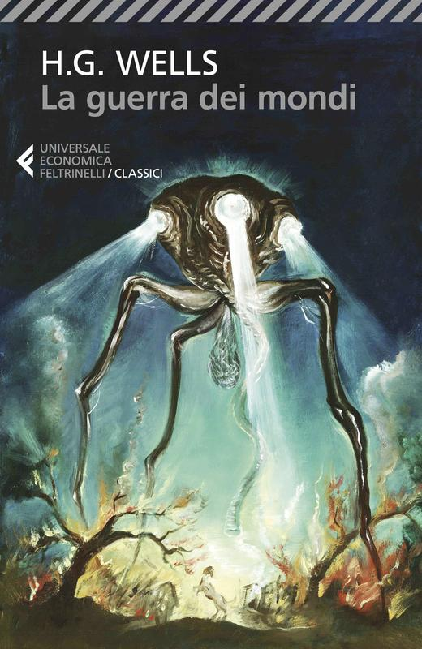
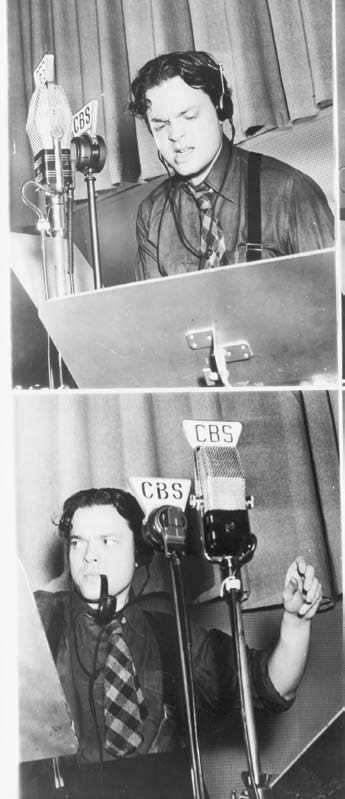
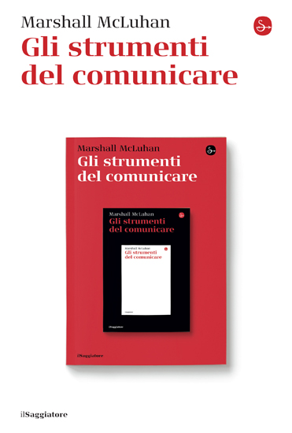
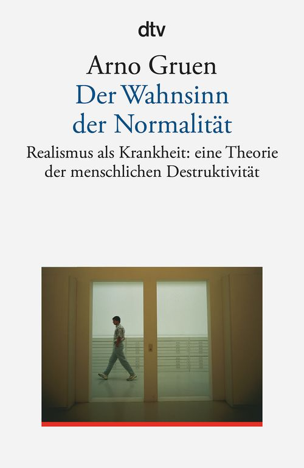
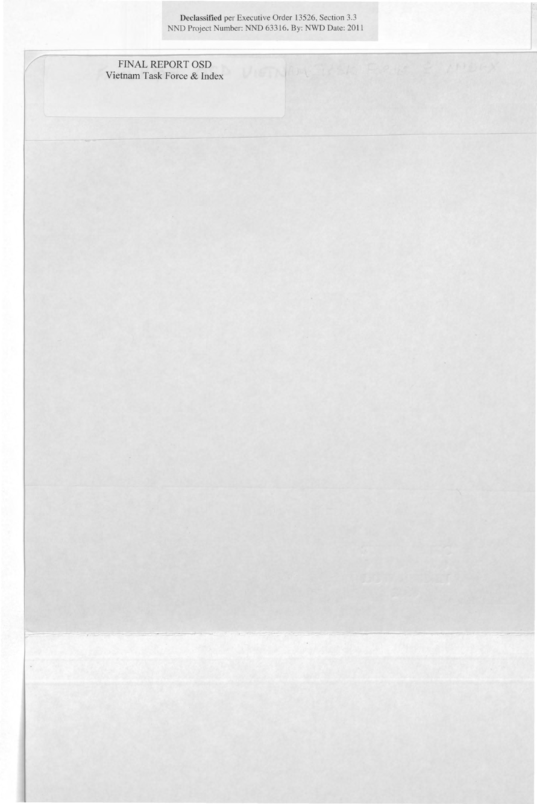

40:00 · 10 OPERE
Noi preferiamo di no.
Il filo del discorso
Il relatore si rivolge al pubblico prima delle elezioni politiche italiane del 25 settembre 2022 e propone il rifiuto di Bartleby come immagine di autonomia dal consenso numerico. Il punto di partenza è il radiodramma The War of the Worlds di Orson Welles, accostato alla capacità dei mezzi di comunicazione di suscitare paura e orientare la percezione.
Leggi la sintesi completaRiduci la sintesi
Da questo esempio il contributo passa al concetto di industria culturale, alla distinzione fra intelligenza scolastica e buon senso e alla possibilità che anche l’opposizione riprenda gli stessi temi imposti dai media dominanti. La lettura polemica di Apocalittici e integrati di Umberto Eco e il richiamo ad Arno Gruen introducono il problema dell’adattamento opportunistico. Nella seconda parte il relatore distingue due pubblici in base alle fonti informative e teme che la loro contrapposizione si rifletta nel voto. Le testimonianze attribuite a John Stockwell sul Vietnam e il riferimento ai Pentagon Papers sono impiegati come analogie della sfiducia istituzionale. La scheda distingue queste interpretazioni dalle prove: il panico del 1938 non ebbe una portata nazionale accertata nei termini della leggenda, una analogia storica non dimostra una regia della comunicazione sanitaria e il dissenso non identifica automaticamente una maggiore capacità di giudizio. La chiusura invita a esprimere il proprio rifiuto attraverso il voto.
I libri nel discorso

La guerra dei mondi (The War of the Worlds)
Note sul riferimento
Copertina: Feltrinelli, Universale Economica I Classici, 2023, traduzione e cura di Mirko Esposito, 288 pagine; edizione di riferimento.
Immagine autentica dell’opera, controllata visivamente; l’edizione di riferimento non è attribuita al filmato.
H.G.Wells e La guerra dei mondi espliciti come opera di partenza dell’adattamento.

The War of the Worlds (Mercury Theatre on the Air, 30 ottobre 1938)
Note sul riferimento
Fotografie d’archivio: Orson Welles ai microfoni CBS: CBS, The Mercury Theatre on the Air, trasmissione del 30 ottobre 1938. Immagine: due fotografie di Orson Welles ai microfoni CBS, riprodotte dalla Library of Congress Magazine, luglio–agosto 2016, pp. 8–9. Non è una copertina del romanzo o di un disco.
Coppia di fotografie autentiche riprodotte dalla Library of Congress nell’articolo dedicato al radiodramma. Immagine tratta dalla pagina 6 del documento. Welles, copione, cuffie e microfoni CBS riconoscibili. Il testo della rivista collega le immagini al protagonista del programma, ma non si certifica da queste sole foto l’istante della diretta 1938. Immagine di archivio dichiarata, non falsa copertina libraria.
Orson Welles, CBS e trasmissione 1938 espliciti, con commento alla struttura radiofonica e alla ricezione.

Fedro
Note sul riferimento
Copertina: BUR · 2006 · a cura di Roberto Velardi
Immagine autentica dell’opera, controllata visivamente; l’edizione di riferimento non è attribuita al filmato.
Fedro nominato nel passaggio su scrittura dei discorsi e paura di essere chiamati sofisti.

Gli strumenti del comunicare (Understanding Media)
Identificazione probabile
Note sul riferimento
Copertina: Il Saggiatore, 2023, traduzione di Ettore Capriolo; opera originale del 1964.
Immagine autentica dell’opera, controllata visivamente; l’edizione di riferimento non è attribuita al filmato.
Mc Luhan e formula il mezzo è il messaggio: collegamento probabile a Understanding Media, titolo non pronunciato.

Dialettica dell’illuminismo
Identificazione probabile
Note sul riferimento
Copertina: Einaudi, Piccola Biblioteca Einaudi, 2010
Edizione illustrativa dell'opera, con traduzione di Renato Solmi e introduzione di Carlo Galli; non identificata nel video.
Due teorici della Scuola di Francoforte e industria culturale: collegamento probabile al capitolo della Dialettica dell’illuminismo, autori e titolo non pronunciati.

Bartleby lo scrivano
Note sul riferimento
Copertina della raccolta: Bompiani · Bartleby lo scrivano e altri racconti · 2018
Copertina della raccolta Bompiani che contiene Bartleby lo scrivano. Non è presentata come copertina di un’edizione autonoma del racconto né come l’esemplare citato nel video.
Bartleby e preferirei di no espliciti come immagine del rifiuto.

Apocalittici e integrati
Note sul riferimento
Copertina: La nave di Teseo, I delfini, 2025; opera originariamente pubblicata nel 1964.
Immagine autentica dell’opera, controllata visivamente; l’edizione di riferimento non è attribuita al filmato.
Umberto Eco e Apocalittici e integrati espliciti nella polemica con Zolla.

Il Gattopardo
Note sul riferimento
Copertina: Feltrinelli · Universale Economica 900 · 2026
Immagine autentica dell’opera, controllata visivamente; l’edizione di riferimento non è attribuita al filmato.
Tomasi di Lampedusa e battuta sul cambiare perché tutto rimanga: riferimento riconoscibile al Gattopardo.

Der Wahnsinn der Normalität. Realismus als Krankheit: Eine Theorie der menschlichen Destruktivität
Note sul riferimento
Copertina: dtv, edizione tascabile del 1 gennaio 1992 e ristampe successive, ISBN 9783423350020, 224 pagine; il catalogo corrente indica 26. Auflage. Titolo italiano descrittivo: La follia della normalità, non certificazione di una traduzione italiana.
Copertina autentica dtv vista integralmente: Arno Gruen, titolo blu, sottotitolo tedesco e fotografia di un uomo che passa davanti a una finestra, entro cornice scura con riga rossa. File specifico dell’editore. Nessun esemplare è attribuito al relatore senza revisione audiovisiva.
Arno Gruen e Der Wahnsinn der Normalität espliciti; il relatore ne traduce il titolo.

Pentagon Papers (Report of the Office of the Secretary of Defense Vietnam Task Force)
Note sul riferimento
Prima pagina del fascicolo introduttivo e indice: Rapporto finale del 1969 · fascicolo introduttivo e indice · scansione NARA declassificata nel 2011
Prima pagina del fascicolo introduttivo e indice conservato dai National Archives; non è la copertina di un libro e non riproduce l’intero rapporto. La voce riguarda il corpus documentario.
Pentagon Papers espliciti come documentazione da consultare sul Vietnam.